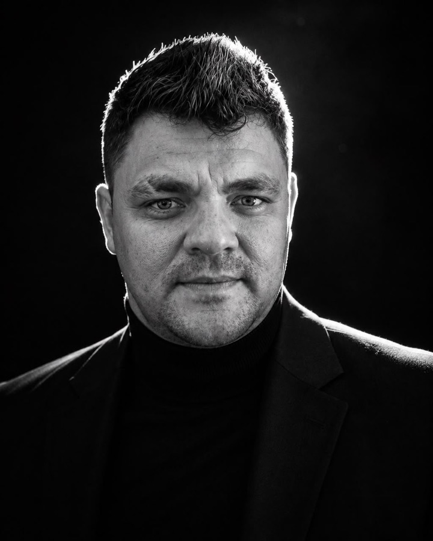

01Find the bottleneck
Enquiry→Manual entry→Follow up
Choose the work worth automating
Identify repeated steps and define a measurable outcome.
YOU GETA clear scope and success measure
We help you map your operations, identify bottlenecks, and automate repetitive tasks with a team of specialised AI agents
Ready for Operational Excellence? ↗01 / UTANA CONSULTING
STRATEGY MEETS ENGINEERING
Connect your tools and reduce repetitive work
We identify a useful starting point, build the workflow, and help your team adopt it.
Find your starting point ↗Identify repeated steps and define a measurable outcome.
Connect your existing systems around the selected task.
Test with your team, measure results, and refine.
HOW WE WORK
Tell us what slows your team down.
We review your workflows together and identify what can be done faster and better.
We agree the scope and start your automation on a subscription basis.
Ongoing consultation, maintenance, and troubleshooting keep the work moving.
YOUR SYSTEMS, YOUR CONTROL
Your company hosts and manages the workflows and data, and controls access to SaaS applications, communication tools, and email accounts.
02 / POSSIBILITIES, MADE PRACTICAL
ILLUSTRATIVE USE CASESStart where your team loses time and mistakes happen.
Design around the outcome that matters
Find answers across internal documents and prepare sourced briefs.
Review important conclusions against their sources.
Discuss this use case ↗Organise enquiries, collect missing details, and draft replies.
Approve pricing and commitments before sending.
Discuss this use case ↗Process documents and routine updates across your tools.
Route exceptions to your team.
Discuss this use case ↗Connect research, development, documentation, and testing.
Review and test changes before release.
Discuss this use case ↗BUSINESS AUTOMATION USE CASES
03 / THE PEOPLE BEHIND THE WORK
Meet the team behind Utana
General Manager
Marketing and sales specialist focused on customer needs and business strategy.
LinkedIn
Chairman
Neuroscientist and machine learning researcher. Former Head of Data Science at Wrike and ML engineer at VK.com.
LinkedInHead of IT
Backend developer specialising in ERP systems and tools for operations and finance.
LinkedInWorkflow Engineer
Solution architect and Python developer specialising in knowledge retrieval, chatbots, and enterprise automation.
LinkedInAgentic Engineer
Web developer with React expertise and internship experience at Amazon and Nagarro.
LinkedInAutomation Specialist
Full stack developer with JavaScript, MySQL, and product coordination experience.
LinkedIn04 / AUTOMATION INSIGHTS
WORKFLOWS, OPERATIONS & BETTER WAYS TO WORKFIELD NOTES / STRATEGY
FIELD NOTES / IMPLEMENTATION
FIELD NOTES / DESIGN
An agent reviews results. People approve the next change
Read the article ↗TAKE THE OPPORTUNITY / APPLY FOR THE TEST PILOT
Applications are open until 1 November. Tell us what you want to automate and we’ll discuss the fit.
sapiens@utana.group ↗Al Muhairbi Building 201
Office E-13, Al Gharhoud
Dubai, United Arab Emirates
Select the button to open your mail application. Include your name, business, contact number, and the workflow you would like to automate.
Open email applicationYour enquiry is not sent until you send the email. If no mail application opens, copy sapiens@utana.group into your preferred email service.